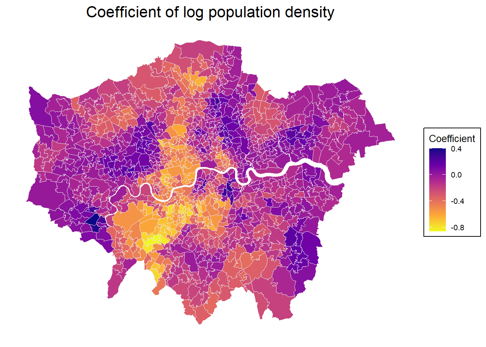

15 Other Models
\[ \newcommand{\tr}{\mathrm{tr}} \newcommand{\rank}{\mathrm{rank}} \newcommand{\plim}{\operatornamewithlimits{plim}} \newcommand{\diag}{\mathrm{diag}} \newcommand{\bm}[1]{\boldsymbol{\mathbf{#1}}} \newcommand{\Var}{\mathrm{Var}} \newcommand{\Exp}{\mathrm{E}} \newcommand{\Cov}{\mathrm{Cov}} \newcommand\given[1][]{\:#1\vert\:} \newcommand{\irow}[1]{% \begin{pmatrix}#1\end{pmatrix} } \]
15.0.1 Required packages
15.0.2 Session info
R version 4.4.1 (2024-06-14 ucrt)
Platform: x86_64-w64-mingw32/x64
Running under: Windows 11 x64 (build 22631)
Matrix products: default
locale:
[1] LC_COLLATE=English_United Kingdom.utf8
[2] LC_CTYPE=English_United Kingdom.utf8
[3] LC_MONETARY=English_United Kingdom.utf8
[4] LC_NUMERIC=C
[5] LC_TIME=English_United Kingdom.utf8
time zone: Europe/Berlin
tzcode source: internal
attached base packages:
[1] stats graphics grDevices utils datasets methods
[7] base
other attached packages:
[1] GWmodel_2.3-2 Rcpp_1.0.12 sp_2.1-4
[4] robustbase_0.99-2 viridisLite_0.4.2 tmap_3.3-4
[7] spatialreg_1.3-4 Matrix_1.7-0 spdep_1.3-5
[10] spData_2.3.1 mapview_2.11.2 sf_1.0-16
loaded via a namespace (and not attached):
[1] xfun_0.45 raster_3.6-26 htmlwidgets_1.6.4
[4] lattice_0.22-6 tools_4.4.1 crosstalk_1.2.1
[7] LearnBayes_2.15.1 parallel_4.4.1 stats4_4.4.1
[10] sandwich_3.1-0 spacetime_1.3-1 proxy_0.4-27
[13] DEoptimR_1.1-3 xts_0.14.0 KernSmooth_2.23-24
[16] satellite_1.0.5 RColorBrewer_1.1-3 leaflet_2.2.2
[19] lifecycle_1.0.4 FNN_1.1.4 compiler_4.4.1
[22] deldir_2.0-4 munsell_0.5.1 terra_1.7-78
[25] codetools_0.2-20 leafsync_0.1.0 stars_0.6-5
[28] htmltools_0.5.8.1 class_7.3-22 MASS_7.3-60.2
[31] classInt_0.4-10 lwgeom_0.2-14 wk_0.9.1
[34] abind_1.4-5 boot_1.3-30 multcomp_1.4-25
[37] nlme_3.1-164 digest_0.6.35 mvtnorm_1.2-5
[40] splines_4.4.1 fastmap_1.2.0 grid_4.4.1
[43] colorspace_2.1-0 cli_3.6.2 magrittr_2.0.3
[46] base64enc_0.1-3 dichromat_2.0-0.1 XML_3.99-0.16.1
[49] survival_3.6-4 leafem_0.2.3 TH.data_1.1-2
[52] e1071_1.7-14 scales_1.3.0 rmarkdown_2.27
[55] zoo_1.8-12 png_0.1-8 coda_0.19-4.1
[58] evaluate_0.24.0 knitr_1.47 tmaptools_3.1-1
[61] s2_1.1.6 rlang_1.1.4 glue_1.7.0
[64] DBI_1.2.3 rstudioapi_0.16.0 jsonlite_1.8.8
[67] R6_2.5.1 intervals_0.15.4 units_0.8-5 15.0.3 Reload data from pervious session
load("_data/msoa2_spatial.RData")15.1 Geographically weighted regression
Does the relation between \(y\) and \(x\) vary depending on the region we are looking at? With geographically weighted regressions (GWR), we can exploit the spatial heterogeneity in relations / coefficients.
GWR (Brunsdon, Fotheringham, and Charlton 1996; Gollini et al. 2015) is mainly an explorative tool for spatial data analysis in which we estimate an equation at different geographical points. For \(L\) given locations across London, we receive \(L\) different coefficients.
\[ \begin{split} \hat{\bm \beta}_l=& ({\bm X}^\intercal{\bm M}_l{\bm X})^{-1}{\bm X}^\intercal{\bm M}_l{\bm Y}, \end{split} \]
The \(N \times N\) matrix \({\bm M}_l\) defines the weights at each local point \(l\), assigning higher weights to closer units. The local weights are determined by a kernel density function with a pre-determined bandwidth \(b\) around each point (either a fixed distance or an adaptive k nearest neighbours bandwidth). Models are estimated via gwr.basic() or gwr.robust() of the GWmodel package.
# Search for the optimal bandwidth
set.seed(123)
hv_1.bw <- bw.gwr(log(med_house_price) ~ log(no2) + log(POPDEN) + pubs_count ,
data = as_Spatial(msoa.spdf),
kernel = "boxcar",
adaptive = TRUE) Adaptive bandwidth: 615 CV score: 117.989
Adaptive bandwidth: 388 CV score: 107.5287
Adaptive bandwidth: 247 CV score: 89.99347
Adaptive bandwidth: 160 CV score: 76.23795
Adaptive bandwidth: 106 CV score: 66.39574
Adaptive bandwidth: 73 CV score: 62.89816
Adaptive bandwidth: 52 CV score: 59.46008
Adaptive bandwidth: 39 CV score: 56.70472
Adaptive bandwidth: 31 CV score: 54.97107
Adaptive bandwidth: 26 CV score: 53.27627
Adaptive bandwidth: 23 CV score: 54.23635
Adaptive bandwidth: 28 CV score: 54.47944
Adaptive bandwidth: 25 CV score: 52.5378
Adaptive bandwidth: 24 CV score: 53.74594
Adaptive bandwidth: 25 CV score: 52.5378 hv_1.bw[1] 25### GWR
hv_1.gwr <- gwr.robust(log(med_house_price) ~ log(no2) + log(POPDEN) + pubs_count,
data = as_Spatial(msoa.spdf),
kernel = "boxcar",
adaptive = TRUE,
bw = hv_1.bw,
longlat = FALSE)
print(hv_1.gwr) ***********************************************************************
* Package GWmodel *
***********************************************************************
Program starts at: 2024-06-29 17:44:07.836814
Call:
gwr.basic(formula = formula, data = data, bw = bw, kernel = kernel,
adaptive = adaptive, p = p, theta = theta, longlat = longlat,
dMat = dMat, F123.test = F123.test, cv = T, W.vect = W.vect,
parallel.method = parallel.method, parallel.arg = parallel.arg)
Dependent (y) variable: med_house_price
Independent variables: no2 POPDEN pubs_count
Number of data points: 983
***********************************************************************
* Results of Global Regression *
***********************************************************************
Call:
lm(formula = formula, data = data)
Residuals:
Min 1Q Median 3Q Max
-0.90930 -0.24801 -0.05018 0.20925 1.49660
Coefficients:
Estimate Std. Error t value Pr(>|t|)
(Intercept) 10.630835 0.194980 54.523 < 2e-16 ***
log(no2) 0.716116 0.074916 9.559 < 2e-16 ***
log(POPDEN) -0.111104 0.023101 -4.809 1.75e-06 ***
pubs_count 0.008513 0.004209 2.023 0.0434 *
---Significance stars
Signif. codes: 0 '***' 0.001 '**' 0.01 '*' 0.05 '.' 0.1 ' ' 1
Residual standard error: 0.359 on 979 degrees of freedom
Multiple R-squared: 0.1177
Adjusted R-squared: 0.115
F-statistic: 43.55 on 3 and 979 DF, p-value: < 2.2e-16
***Extra Diagnostic information
Residual sum of squares: 126.1498
Sigma(hat): 0.3585988
AIC: 781.3976
AICc: 781.459
BIC: -142.6963
***********************************************************************
* Results of Geographically Weighted Regression *
***********************************************************************
*********************Model calibration information*********************
Kernel function: boxcar
Adaptive bandwidth: 25 (number of nearest neighbours)
Regression points: the same locations as observations are used.
Distance metric: Euclidean distance metric is used.
****************Summary of GWR coefficient estimates:******************
Min. 1st Qu. Median 3rd Qu. Max.
Intercept -5.4436033 10.0869061 13.1177690 15.5252567 26.8582
log(no2) -4.0174929 -0.7502331 0.0833824 1.0580475 6.2823
log(POPDEN) -0.8610728 -0.3139087 -0.1368702 -0.0200140 0.4031
pubs_count -0.3421595 -0.0252434 -0.0034784 0.0192272 0.2222
************************Diagnostic information*************************
Number of data points: 983
Effective number of parameters (2trace(S) - trace(S'S)): 136.1695
Effective degrees of freedom (n-2trace(S) + trace(S'S)): 846.8305
AICc (GWR book, Fotheringham, et al. 2002, p. 61, eq 2.33): -133.0433
AIC (GWR book, Fotheringham, et al. 2002,GWR p. 96, eq. 4.22): -316.0801
BIC (GWR book, Fotheringham, et al. 2002,GWR p. 61, eq. 2.34): -496.9587
Residual sum of squares: 36.33063
R-square value: 0.7459107
Adjusted R-square value: 0.7050051
***********************************************************************
Program stops at: 2024-06-29 17:44:15.354337 The results give a range of coefficients for different locations. Let’s map those individual coefficients.
# Spatial object
gwr.spdf <- st_as_sf(hv_1.gwr$SDF)
gwr.spdf <- st_make_valid(gwr.spdf)
# Map
tmap_mode("view")ℹ tmap mode set to "view".mp2 <- ggplot(data = gwr.spdf) +
geom_sf(aes(fill = `log(POPDEN)`), color = "grey92", size = 0.1) +
scale_fill_viridis_c(
name = "Coefficient",
option = "C",
direction = -1,
na.value = "grey90"
) +
labs(title = "Coefficient of log population density") +
theme_minimal() +
theme(
plot.title = element_text(hjust = 0.5, size = 16),
legend.title = element_text(size = 10),
legend.text = element_text(size = 8),
legend.background = element_rect(fill = "white", color = "black"),
axis.text = element_blank(),
axis.ticks = element_blank(),
panel.grid = element_blank()
)
mp2
Just from looking at the map, there may be a connection with the undergrpund network - the effect of population density on house values seems to be stronger / more positive where underground connection is weaker?!
15.2 Non-Linear Models
Models with endogenous regressors (SAR)
In the literature: mostly spatial probit considered
Spatial logit rather uncommon (non normally distributed errors)
Issues with non-linear spatial models
Estimation: with dependent observations, we need to maximize one \(n\)-dimensional (log-)likelihood instead of a product of \(n\) independent distributions
Estimation challenging and computationally intense
Hard to interpret due to non-linear effects in non-linear models
Elhorst et al. (2017), Franzese, Hays, and Cook (2016)
15.2.1 Problem with non-linear models
Spatial-SAR-Probit \[ {\bm y^\star}=\rho{\bm W}{\bm y^\star}+{\bm X}{\bm \beta}+ {\bm \varepsilon} \\ y_i = \{1 \text{ if } y_i^\star > 0; 0 \text{ if } y_i^\star \leq 0 \} \nonumber \]
or in reduced form:
\[ {\bm y^\star}=(\bm I - \rho{\bm W})^{-1}{\bm X}{\bm \beta} + \bm u \text{, } \bm u = (\bm I - \rho{\bm W})^{-1}{\bm \varepsilon},\\ \text{with } \bm u \sim MVN(0, (\bm I - \rho{\bm W})^\intercal (\bm I - \rho{\bm W})^{-1}) \nonumber \]
Probability \(\bm y^\star\) is a latent variable, not observed
We only observe binary outcome \(y_i\)
\(\Cov(y_i, y_j)\) is not the same as \(\Cov(y_i^\star, y_j^\star)\)
Error term is heteroskedastic and spatially correlated
Probability
\[ \mathrm{Prob}[{\bm y^\star}>0] = \mathrm{Prob}[(\bm I - \rho{\bm W})^{-1}{\bm X}{\bm \beta} + (\bm I - \rho{\bm W})^{-1}{\bm \varepsilon}] \\ = \mathrm{Prob}[(\bm I - \rho{\bm W})^{-1}{\bm \varepsilon} < (\bm I - \rho{\bm W})^{-1}{\bm X}{\bm \beta}] \nonumber \]
or in using the observed outcome:\[ \mathrm{Prob}[\bm y_i=1 | \bm X] = \mathrm{Prob}\big[u_i < [(\bm I - \rho{\bm W})^{-1}{\bm X}{\bm \beta}]_i\big] \\ = \bm \phi\{[(\bm I - \rho{\bm W})^{-1}{\bm X}{\bm \beta}]_i / \sigma_{ui}\} \]
\(\bm \phi\{\}\) is an n-dimensional cumulative-normal distribution
\(\sigma_{ui}\) equals \((\bm I - \rho{\bm W})^\intercal (\bm I - \rho{\bm W})^{-1})_{ii}\), not constant
no analytical solution
15.2.2 Estimation
Estimation methods for Spatial-SAR Probit / Logit
Expectation Maximization (McMillen 1992).
(Linearized) Generalized Methods of Moments (Klier and McMillen 2008).
Recursive Importance Sampling (Beron and Vijverberg 2004).
Maximum Simulated Likelihood RIS (Franzese, Hays, and Cook 2016)
Bayesian approach with Markov Chain Monte Carlo simulations (LeSage and Pace 2009): R package
spatialprobit
Note that it can be hard to interpret the results. As in the linear case, it is necessary to compute the impacts. However, the `marginal’ effects may vary with values of the independent variables and the location (Lacombe and LeSage 2018).
15.2.3 Suggestion
In case you are not familiar with the econometric estimation methods and spatial regression models, don't use non-linear models with AR term.
If necessary, I would recommend using `spatialprobit` relying on Bayesian MCMC (set high ndraw and burn-in, e.g. 7500 and 2500).So far, no `best practice’ guide
No systematic comparison of estimation methods
In R: Only
spatialprobitprovides impact measures?Hard to interpret results
Work-around: If the specification is theoretical plausible, using SLX probit / logit might be a practical solution!